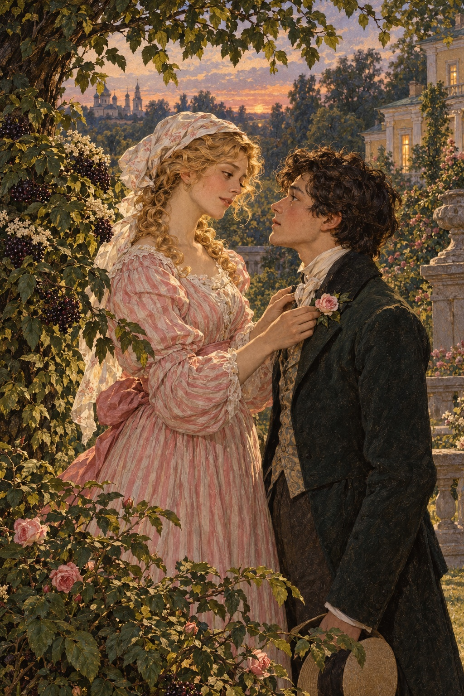

Ivan Turgenev · First Love
제15장
그 뒤 대여섯 날 동안
나는 지나이다를
거의 보지 못했다.
그녀는 아프다고 했다.
그래도 늘 오던 손님들은
‘당번을 서러 간다’며
별채에 모였다.
마이다노프만 오지 않았다.
누군가에게 감탄하지 못하면
곧 풀이 죽고
따분해하는 사람이었다.
벨로브조로프는
군복 단추를 모두 채운 채
구석에 침울하게 앉았다.
얼굴은 붉었다.
말렙스키 백작의
가느다란 얼굴에는
못된 웃음이 늘 어른거렸다.
실제로 그는 지나이다에게
미움을 샀다.
그래서 늙은 공작부인의
비위를 맞추는 데 열을 올렸다.
그녀와 함께
역마차를 타고
총독을 찾아가기까지 했다.
하지만 일은 잘 풀리지 않았다.
말렙스키까지
곤란한 처지가 되었다.
예전에 도로 담당 장교들과
얽힌 일을 추궁받아,
그때는 경험이 부족했다고
해명해야 했다.
루신은 하루에
두 번쯤 왔다.
오래 머물지는 않았다.
지난번 대화 이후
나는 그가 조금 무서웠다.
그래도 진심으로
마음이 끌렸다.
한 번은 함께
네스쿠치노예 정원을 걸었다.
그날 그는
무척 온화하고 다정했다.
풀과 꽃의 이름이며
성질을 알려 주었다.
그러다 느닷없이
이마를 탁 치고 외쳤다.
“나는 바보야.
그 여자가 단지
남자를 갖고 노는 줄 알았어!
어떤 사람에게는
자신을 희생하는 일도
달콤한가 보군.”
“무슨 뜻이에요?”
내가 물었다.
“당신에게
할 말은 없습니다.”
루신이 퉁명스럽게 답했다.
지나이다는 나를 피했다.
내가 나타나면
불편해하는 게 분명했다.
자기도 모르게
내게서 얼굴을 돌렸다.
자기도 모르게.
그 점이 가장 쓰라렸다.
어쩔 수 없었다.
나는 눈에 띄지 않으려 하면서
멀리서 그녀를 기다렸다.
언제나 성공하지는 못했다.
그녀에게는 여전히
이해할 수 없는 일이
일어나고 있었다.
얼굴도 달라졌고
사람 전체가 달라졌다.
따뜻하고 고요한
어느 저녁이었다.
나는 넓게 퍼진
딱총나무 아래
낮은 의자에 앉아 있었다.
그 자리를 좋아했다.
지나이다의 방 창문이
보였기 때문이다.
머리 위 어두워진 잎사귀 사이에서
작은 새가 바쁘게 움직였다.
회색 고양이는 등을 길게 펴고
정원으로 조심조심 숨어들었다.
첫 딱정벌레들이
아직 맑지만 어두워진 공기에서
묵직하게 윙윙거렸다.
나는 창문을 바라보며
열리기를 기다렸다.
정말로 창문이 열렸다.
지나이다가 나타났다.
흰옷을 입고 있었다.
얼굴도 어깨도 손도
새하얗게 창백했다.
그녀는 오래도록
꼼짝 않고 서서
찡그린 눈썹 아래로
정면을 바라보았다.
그런 눈길은
처음 보았다.
그녀는 양손을
힘껏 맞잡았다.
입술과 이마에
차례로 가져갔다.
그러더니 갑자기
손가락을 벌려
귀 뒤로 머리카락을 쓸어 넘겼다.
머리를 흔들고
결심한 듯 고개를 끄덕인 뒤
창문을 닫았다.
사흘쯤 지나
정원에서 마주쳤다.
나는 비켜 가려 했다.
그녀가 먼저
나를 불러 세웠다.
“손을 주세요.”
예전의 다정한 목소리였다.
“오랫동안 이야기를 못 했잖아요.”
그녀의 눈이
조용히 빛났다.
얼굴에는 안개 너머로 보듯
희미한 웃음이 있었다.
“아직 아프세요?”
내가 물었다.
“아니요.
이제 다 지나갔어요.”
그녀가 작은 붉은 장미를 꺾었다.
“조금 피곤하지만
그것도 나아지겠지요.”
“그럼 예전처럼
돌아오실 건가요?”
지나이다는 장미를
얼굴에 가까이 댔다.
환한 꽃잎의 빛이
뺨에 비친 듯했다.
“제가 달라졌나요?”
“네.”
나는 낮은 목소리로 답했다.
“달라지셨어요.”
“제가 차갑게 대한 건 알아요.”
지나이다가 말을 꺼냈다.
“하지만 마음에 두지 마셨어야죠.
그럴 수밖에 없었어요.
이제 와서 이 말이
무슨 소용이겠어요.”
“제가 사랑하는 게
싫으신 거잖아요!”
나는 저도 모르게
어둡게 외쳤다.
“아니에요.
사랑해 주세요.
다만 예전과는 다르게요.”
“어떻게요?”
“친구가 되어요.”
그녀는 장미 향기를
맡아 보라고 내밀었다.
“제가 훨씬 나이가 많잖아요.
이모뻘일 수도 있어요.
아니, 이모까지는 아니고
누나 정도겠지요.
그런데 그쪽은….”
“어린아이죠.”
내가 말을 잘랐다.
“그래요, 어린아이.
하지만 사랑스럽고
착하고 똑똑한 아이예요.
제가 무척 좋아하는 아이.
오늘부터 당신을
제 시종으로 삼겠어요.
시종은 주인 곁을
떠나서는 안 돼요.”
지나이다는 장미를
내 웃옷 단춧구멍에 꽂았다.

“새로운 자리의 표식이에요.
제가 내리는 은혜지요.”
“예전에는 다른 은혜도
받았는데요.”
내가 중얼거렸다.
“아!”
지나이다가
옆눈으로 나를 보았다.
“기억력도 좋으셔라.
지금도 할 수 있어요.”
그녀가 내게 몸을 굽혀
이마에 깨끗하고
고요한 입맞춤을 남겼다.
나는 그녀를 바라보기만 했다.
그녀는 돌아서며 말했다.
“따라오세요, 나의 시종.”
나는 뒤따라 걸었다.
이 온순하고 분별 있는 사람이
내가 알던 지나이다가
정말 맞는지
계속 의아했다.
걸음도 더 차분해 보였고
몸매도 더 기품 있고
늘씬해 보였다.
아, 내 안에서는
사랑이 얼마나 더 뜨겁게
타올랐던가!